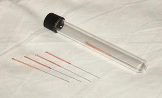

Tűk Több mint 4000 éves hagyományon alapuló orvostudomány, amely Kínából ered. A Hagyományos Kínai Orvostudomány része. A Hagyományos Kínai Orvostudomány az akupunktúra mellett magában foglalja a következőket: gyógynövénykészítményeket, masszázst, moxibuszciót, köpölyözést. A régészeti kutatások alapján már időszámításunk előtt 10000-4000 között hegyes köveket, majd kihegyezett csontokat és bambuszokat használtak a gyógyításban. A legősibb kínai orvosi könyv címe a "Sárga Császár Belgyógyászati Könyve (Huang Ti Nei Ching), amely először foglalkozik az yin és a yang viszonyával, valamint az öt elem tanával. 